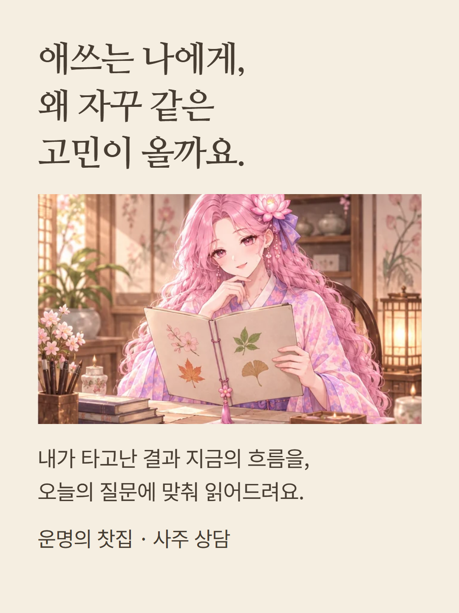
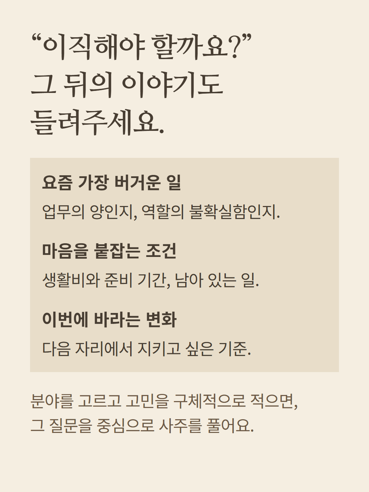
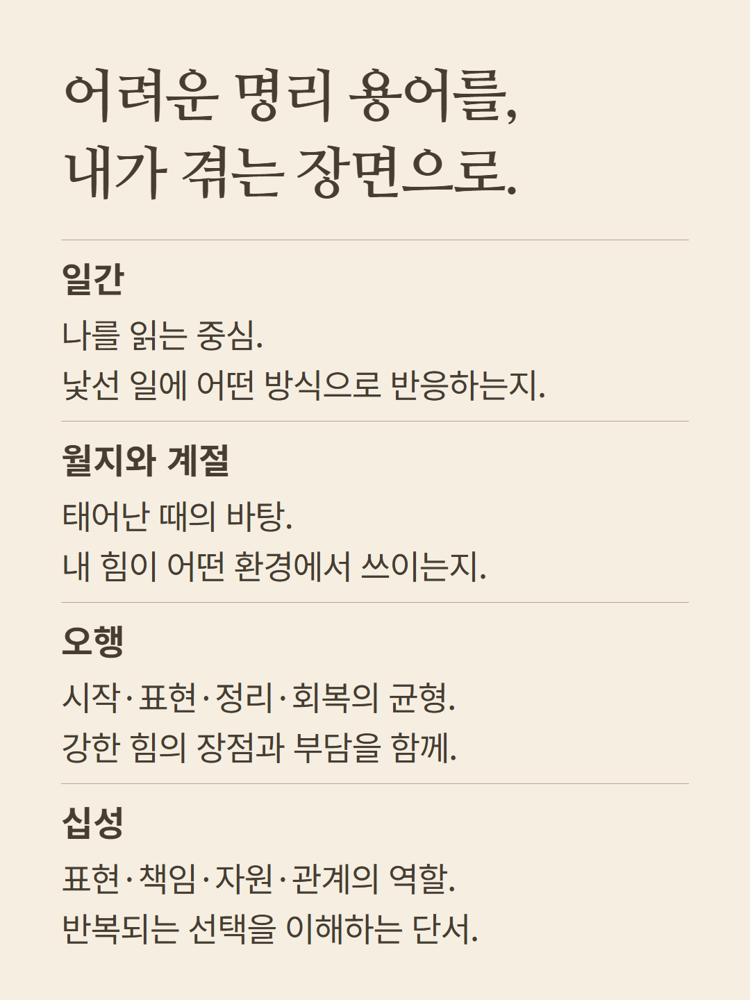
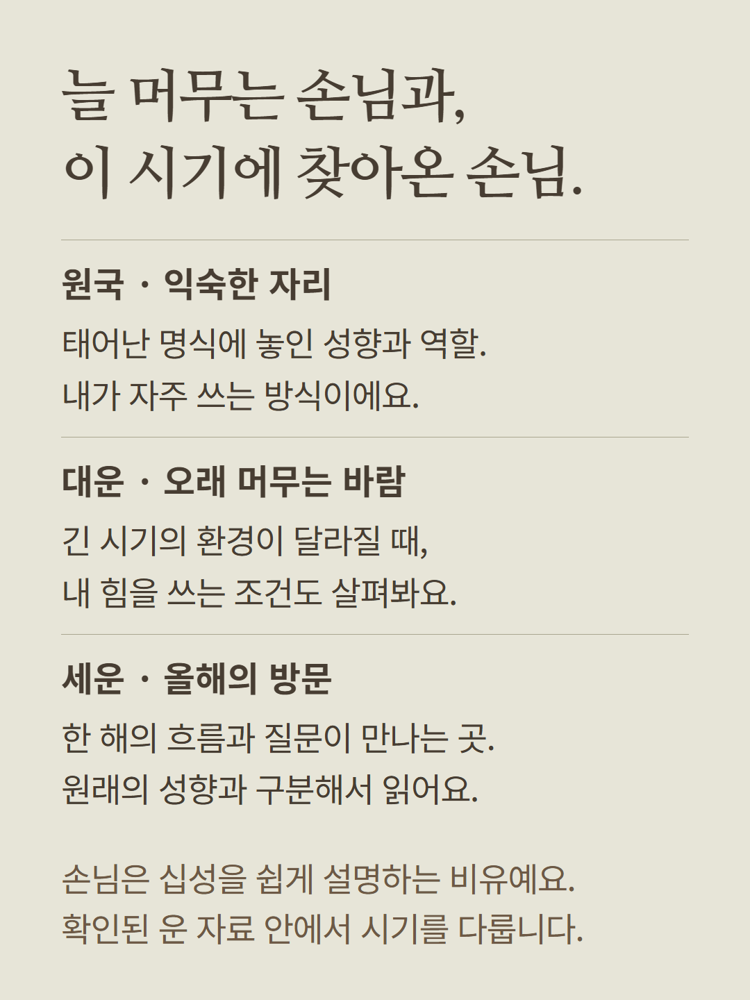
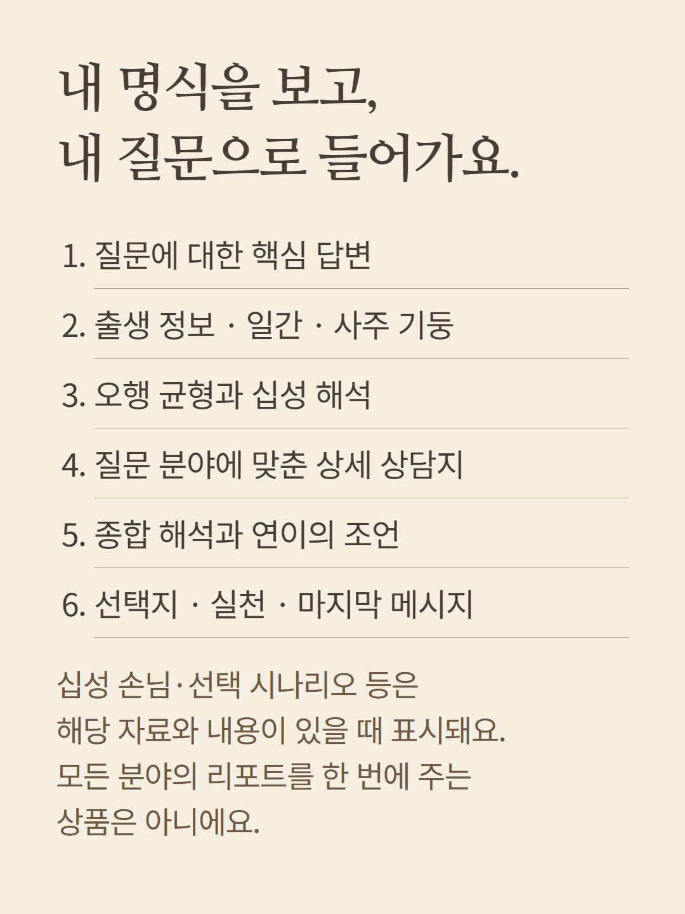
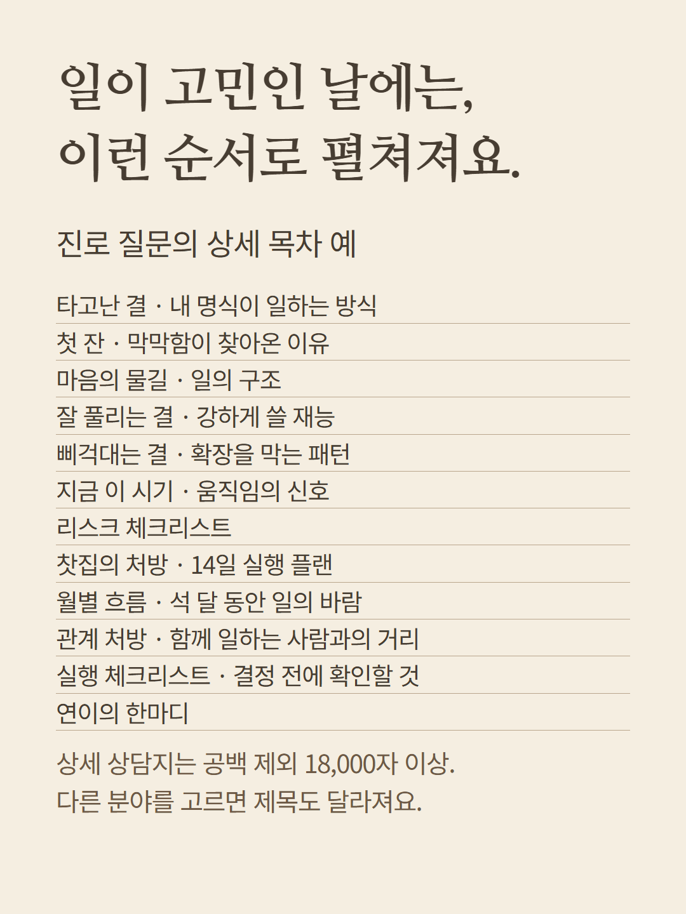
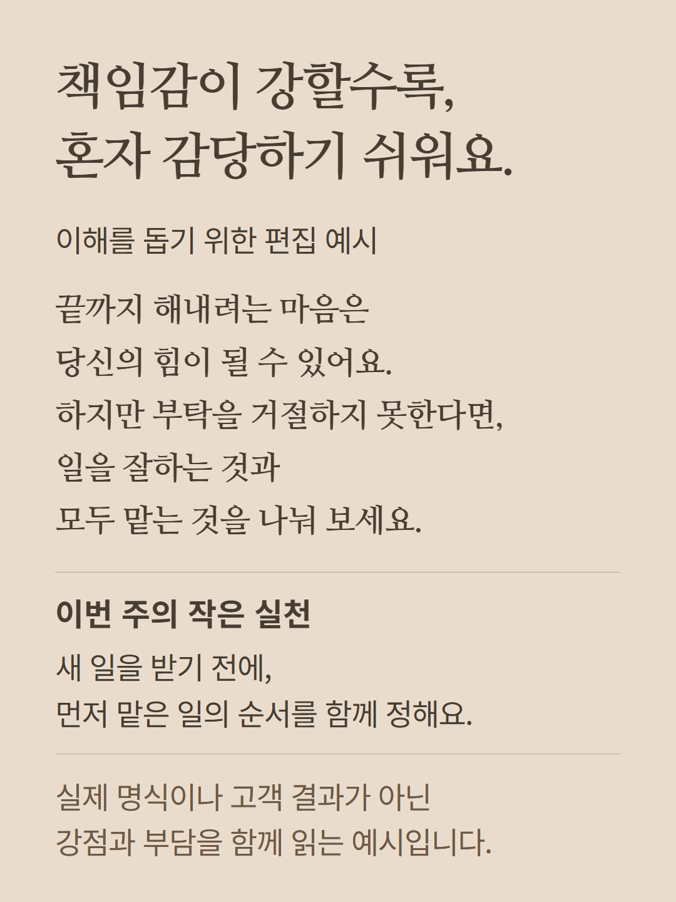
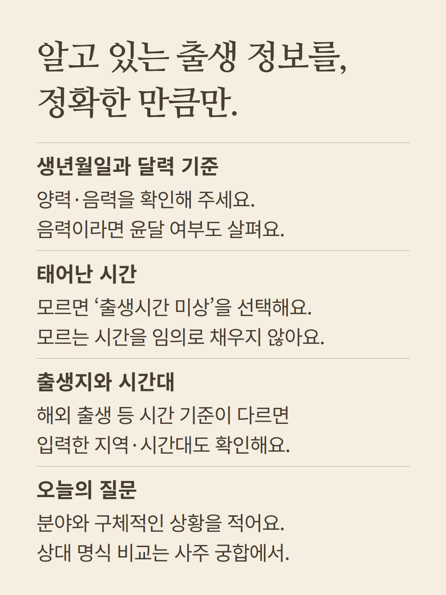
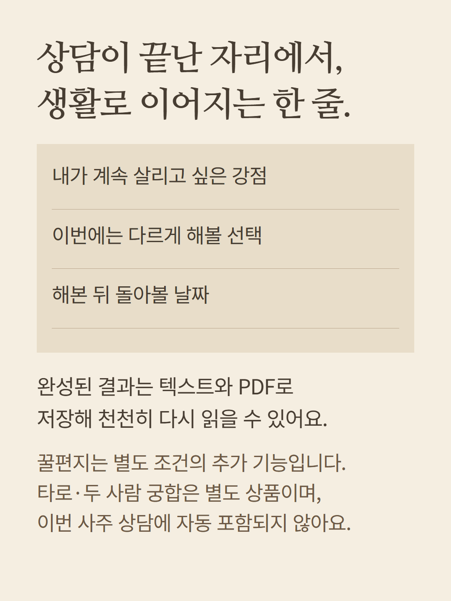
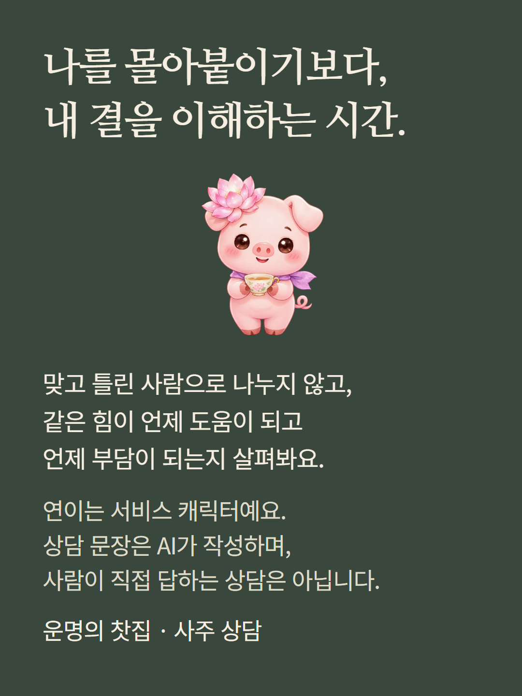

본인의 명식과 질문을 바탕으로 읽는 사주 상담입니다. 목차는 질문 분야에 따라 달라지며, 명식·운 자료 및 결과에 있는 항목만 펼쳐집니다. 타로와 두 사람 궁합은 별도 선택 상품입니다. 안내 속 상담 문장은 이해를 돕기 위한 편집 예시로 실제 고객 결과가 아닙니다. 연이는 서비스 캐릭터이며 상담 문장은 AI가 작성합니다. 꿀편지는 별도 조건이 있는 추가 기능입니다.